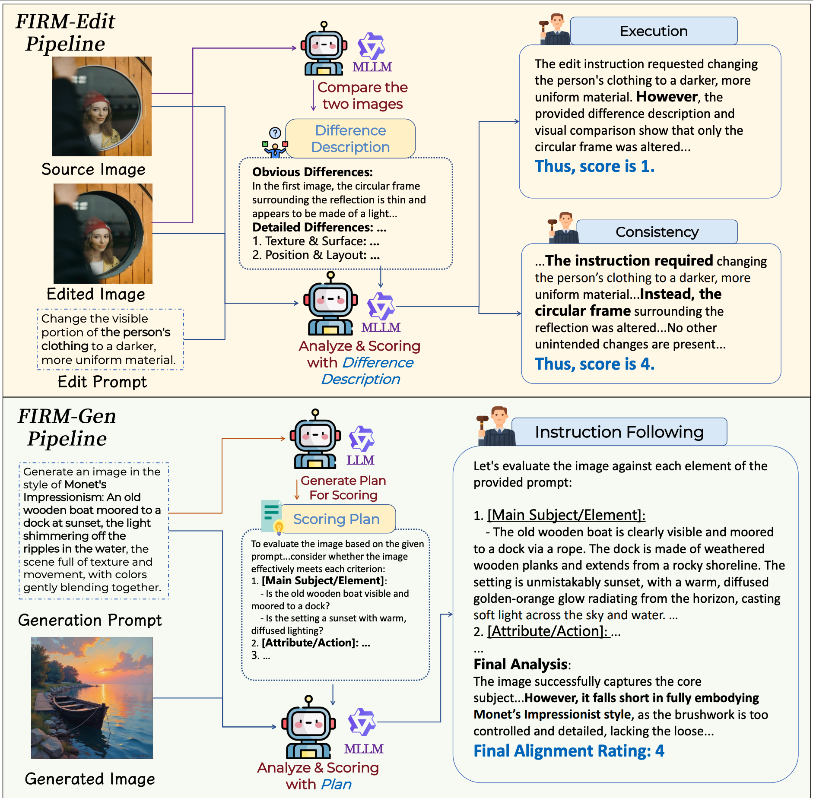
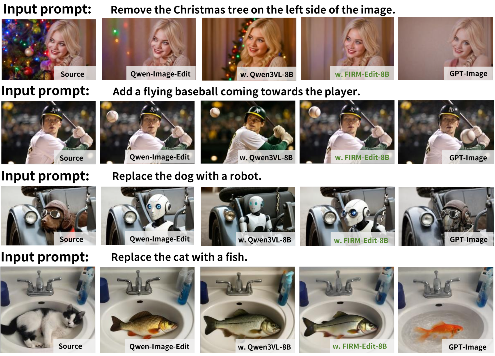
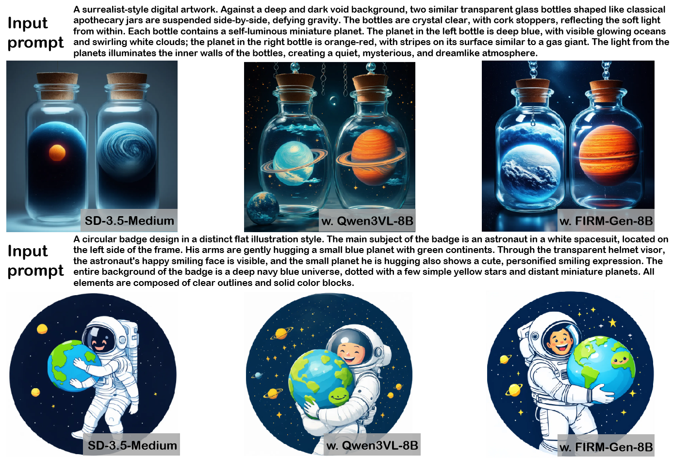

1. Better supervision for critics
FIRM-Edit scores editing with execution and consistency, while FIRM-Gen focuses on instruction following with explicit scoring plans. This yields cleaner reward data and more reliable critic behavior.

FIRM uses a difference-first editing pipeline and a plan-then-score generation pipeline to reduce critic hallucination and improve reward quality.
Abstract
Reinforcement learning has become a promising tool for improving image editing and text-to-image generation, but current reward models often hallucinate, miss details, and assign noisy scores that misguide optimization. FIRM addresses this problem with tailored data curation pipelines, specialized reward models, a human-annotated evaluation benchmark, and reward formulations that better balance competing goals. The framework produces FIRM-Edit-8B and FIRM-Gen-8B, then uses them to guide RL for faithful editing and instruction-aligned generation.
Method
FIRM-Edit scores editing with execution and consistency, while FIRM-Gen focuses on instruction following with explicit scoring plans. This yields cleaner reward data and more reliable critic behavior.
FIRM-Bench measures critic alignment with human judgment for both editing and generation, using balanced score distributions and controlled prompt difficulty.
CME for editing and QMA for generation use a Base-and-Bonus design, preventing easy reward hacking shortcuts and improving credit assignment during optimization.
Instead of asking a model to directly judge edited images end-to-end, FIRM first describes the visual differences between source and edited images, then scores execution and consistency from that structured evidence.
For text-to-image prompts, an LLM first expands the prompt into a checklist, and a multimodal evaluator scores the generated image against this plan dimension by dimension.
CME makes execution a prerequisite for high editing reward, while QMA strengthens alignment with an explicit quality term to suppress low-quality but superficially compliant generations.
Reward formulas
CME
R = Execution * (0.6 + 0.4 * Consistency)
QMA
R = InsFollowing * (0.4 + 0.6 * Quality)
Both formulations are designed to stop the policy from maximizing the easiest sub-score while ignoring the real task objective.
Results

The paper highlights stronger edit execution while preserving task-irrelevant content, addressing the common failure mode of returning an almost unchanged image.

Structured scoring plans improve instruction following, especially on prompts with multiple entities, styles, and spatial constraints.